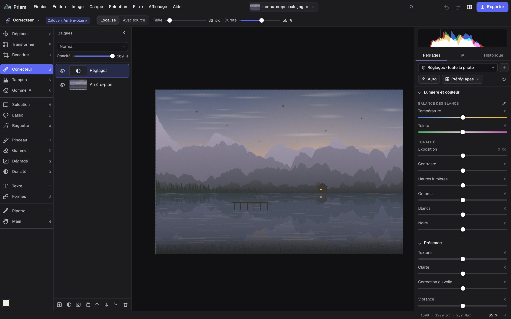

Retouchez vos photos,
tout simplement.
Prism est un logiciel de retouche photo gratuit : calques, réglages précis, fichiers RAW, outils d’IA et une photothèque pour tout ranger. Pour Mac, Windows, ou directement dans votre navigateur.

Tout ce qu’il faut pour retoucher
Les outils d’un logiciel professionnel, dans une interface claire et en français.
Calques et masques
Calques de photo et de réglage, modes de fusion, masques et sélections au lasso ou à la baguette.
Réglages précis
Balance des blancs, exposition, ombres et hautes lumières, clarté, vibrance, préréglages et réglage automatique.
Outils d’IA
Gomme IA pour effacer un élément, détection du sujet et correcteur pour les taches et les poussières.
RAW, HEIC, PSD
Ouvre les fichiers RAW des appareils photo, les photos d’iPhone, les fichiers Photoshop, les PDF et plus encore.
Photothèque
Notes, drapeaux, étiquettes de couleur, albums et recherche pour retrouver chaque photo en un instant.
Votre travail reste chez vous
Vos photos sont enregistrées sur votre ordinateur, sans compte. L’application marche même hors ligne.
Télécharger Prism
Gratuit, sans compte et sans publicité.
Mac
Puces Apple et Intel. macOS 10.15 ou plus récent.
Ouvrez le fichier .dmg et glissez Prism dans Applications. La première fois, faites clic droit sur Prism puis Ouvrir.
Télécharger pour MacWindows
Windows 10 et 11, 64 bits.
Lancez le fichier d’installation. Si Windows affiche un avertissement, cliquez sur Informations complémentaires puis Exécuter quand même.
Télécharger pour WindowsDans le navigateur
Rien à installer. Marche dans Chrome, Edge, Firefox et Safari, sur ordinateur comme sur tablette.
Vos photos sont enregistrées dans le navigateur.
Utiliser en ligne